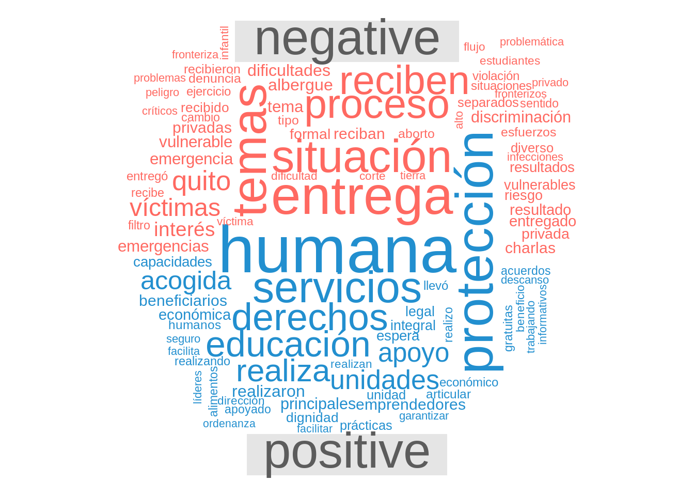
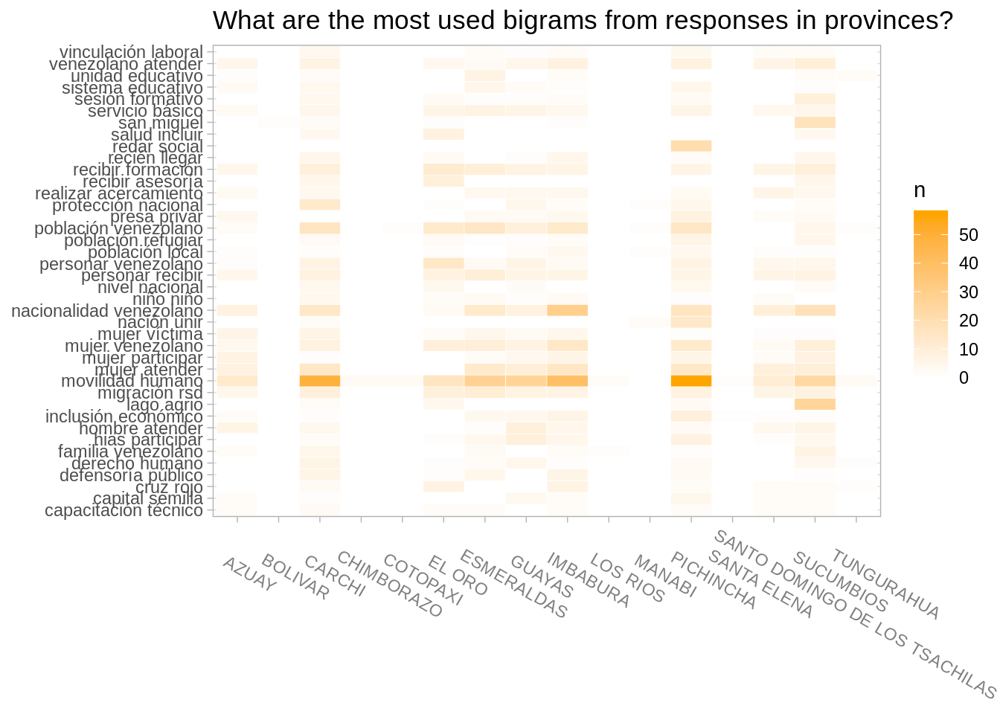
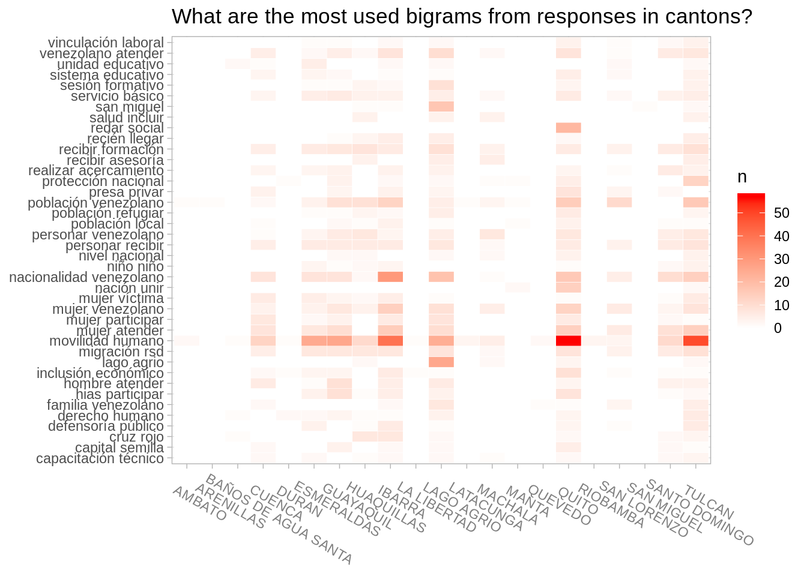

Most used bigrams
Top 40 bigrams are selected by cumulative use. The sectors Tecnico, Poblacion and VBG are chosen for the visualization below of the most used bigrams because these sectors are the ones with higher word counts (see this section for the reason).

Figure 14: Most common bigrams in different sectors
Below some more extra visualizations with location data. Unfortunately, the bigram matrix plot did not bring interesting results when used with the partners data so they are not included here.


Lastly, the table below shows the most used bigrams in all narrative responses that is without any aggregation by any group such as sector name, location and so on.
| Most used bigrams in all responses | |
|---|---|
| The number of bigrams in the multi-text (narrative) fields | |
| bigram | n |
| movilidad humano | 277 |
| nacionalidad venezolano | 120 |
| mujer atender | 93 |
| población venezolano | 91 |
| mujer venezolano | 77 |
| migración rsd | 70 |
| recibir formación | 70 |
| personar recibir | 62 |
| venezolano atender | 56 |
| personar venezolano | 51 |
| servicio básico | 46 |
| hombre atender | 38 |
| mujer participar | 36 |
| lago agrio | 35 |
| hias participar | 34 |
| realizar acercamiento | 32 |
| mujer víctima | 30 |
| inclusión económico | 29 |
| protección nacional | 29 |
| presa privar | 27 |
| cruz rojo | 24 |
| derecho humano | 23 |
| sesión formativo | 23 |
| defensoría público | 22 |
| san miguel | 22 |
| familia venezolano | 21 |
| población refugiar | 21 |
| recién llegar | 21 |
| redar social | 21 |
| sistema educativo | 21 |
| recibir asesoría | 19 |
| capital semilla | 18 |
| nación unir | 18 |
| capacitación técnico | 17 |
| vinculación laboral | 17 |
| niño niño | 16 |
| nivel nacional | 16 |
| población local | 16 |
| salud incluir | 16 |
| unidad educativo | 16 |